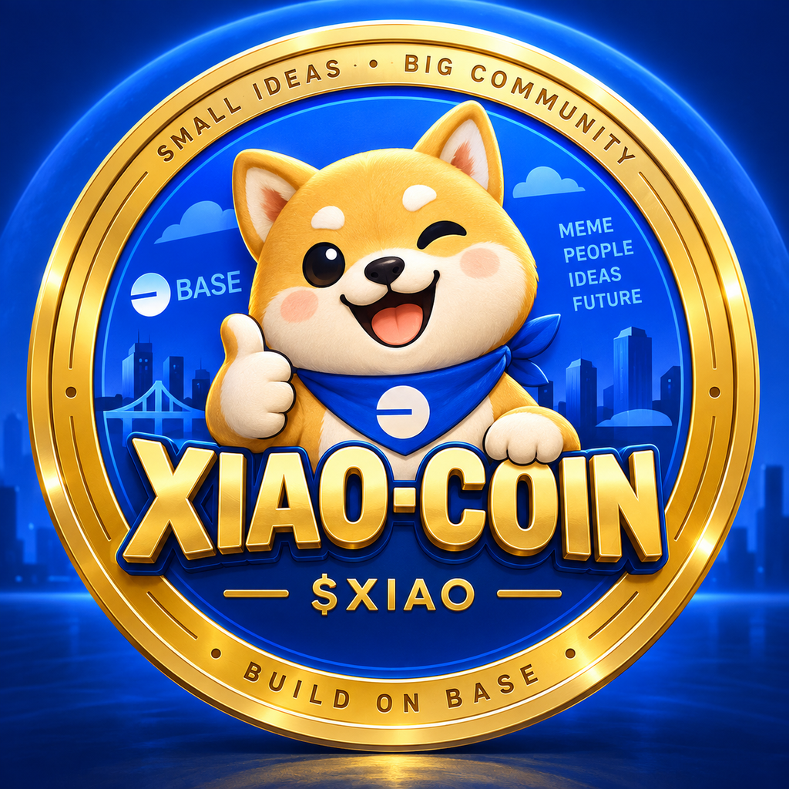

Live on Base
Base.meme Standard
0% tax at launch
Community · creativity · humor
Small ideas.
Big community.
Xiao-Coin ($XIAO) is a community-driven meme coin built on Base, bringing together internet culture, creativity, humor, and community participation. Small ideas, big community. XIAO is created for entertainment and community engagement, with no promise of profit or guaranteed value.
肖币（XIAO）是构建于 Base 网络、由社区驱动的 Meme Coin，汇聚互联网文化、创意、幽默和社区参与。小创意，大社区。XIAO 用于娱乐和社区互动，不承诺利润或任何保证价值。
Official contract
0xc62792b29E6aDbc179e47DAfCe159119bb918888

About Xiao-Coin
A meme coin centered on participation, not promises.
Xiao-Coin brings a playful mascot and Base-native community identity to internet culture. The project welcomes original memes, art, translations, education, and respectful participation.
XIAO is not a stablecoin, equity interest, deposit, or guaranteed investment. Its market value can change rapidly and may fall to zero.
Launch mechanics
From bonding curve to open market
Live progress and market figures change continuously. Use the official Base.meme page for current data.
Bonding curve
800 million XIAO are allocated to the Standard launch curve. Net buying and selling move the curve price.
2.5 ETH goal
ETH is the selected raised token. The launch page uses a 2.5 ETH curve goal under the platform model.
Uniswap V4 path
After platform graduation conditions are met, 200 million reserved XIAO and collateral support the V4 liquidity phase.
No automatic founder allocation. Base.meme Standard mode does not automatically give the creator free XIAO. Holdings must be checked onchain.
Onchain verification
Read the official contract directly
The inspector uses public Base RPC data. Wallet connection is optional and only adds your balance.
RPC statusNot checked
BytecodeNot checked
Onchain name—
Onchain symbol—
Decimals—
Total supply—
Your XIAO balanceConnect wallet
Open BaseScan
Ready. Public reads do not require a wallet.
Safety first
Verify, review, and never share secrets.
Contract over ticker
Anyone can copy “XIAO” or the logo. Only the complete official contract address identifies the token.
No seed phrase requests
No legitimate website or contributor needs your seed phrase, private key, or wallet password.
No guaranteed value
XIAO is speculative and may lose all value. Market cap is not guaranteed cash or exit liquidity.
No manipulation
Do not use wash trading, fake volume, impersonation, misleading claims, or coordinated pump-and-dump activity.
Official access
Scan only after checking the destination.
QR codes are convenient, but always verify the final domain, network, and complete contract address.